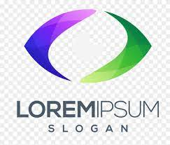

<!--
SPDX-FileCopyrightText: 2022 Digital Dasein <https://digitaldasein.org/>
SPDX-FileCopyrightText: 2022 Gerben Peeters <gerben@digitaldasein.org>
SPDX-FileCopyrightText: 2022 Senne Van Baelen <senne@digitaldasein.org>

SPDX-License-Identifier: MIT
-->

<!doctype html>
<html lang="en-GB">
<head>
  <meta charset="utf-8">
  <style>
    body {
      background: #fafafa;
    }
    dd-titlepage {
      border: 1px solid black;
    }
  </style>
</head>
<body>
  <div id="demo"></div>

  <script type="module">
    import { html, render } from 'lit';
    import '../dist/src/dd-titlepage.js';

    render(
      html`
      <h1>dd-titlepage demo</h1>
      <h2>This example does not include any presentation framework, nor other components</h2>

      <h3>Example 1: default slide setup</h3>
        <dd-titlepage main-title="MyTitle"
                      sub-title="And My SubTitle"
                      date="2022-07-12"
                      author="Senne Van Baelen and Gerben Peeters"
                      organisation="Digital Dasein"
                      img-src="logo.jpeg">
        </dd-titlepage>
      <br><br>

      <h3>Example 2.1: default centralised slide setup</h3>
        <dd-titlepage main-title="MyTitle"
                      sub-title="And My <a href='https://en.wikipedia.org/wiki/Subtitle_(titling)'>SubTitle</a>"
                      date="2022-07-12"
                      author="Senne Van Baelen and Gerben Peeters"
                      organisation="Digital Dasein"
                      center-text
                      img-src="logo.jpeg">
        </dd-titlepage>
      <br><br>

      <h3>Example 2.2: default centralised slide setup, with centralised logo</h3>
        <dd-titlepage main-title="MyTitle"
                      sub-title="And My SubTitle"
                      date="2022-07-12"
                      author="Senne Van Baelen and Gerben Peeters"
                      organisation="Digital Dasein"
                      center-text
                      center-img
                      img-src="logo.jpeg">
        </dd-titlepage>
      <br><br>


      <h3>Example 3: default centralised slide setup, with custom position logo</h3>
        <dd-titlepage main-title="MyTitle"
                      sub-title="And My SubTitle"
                      date="2022-07-12"
                      author="Senne Van Baelen and Gerben Peeters"
                      organisation="Digital Dasein"
                      center-text
                      img-src="logo.jpeg"
                      style="--dd-titlepage-logo-left: 85%;--dd-titlepage-logo-top: 85%;">
        </dd-titlepage>
      <br><br>

      <h3>Example 4: customised setup (3 x 2 grid, 50% width)</h3>
        <dd-titlepage html-top-left="LeftTop"
                      html-top-right="<b>RightTopBold</b>"
                      html-mid-left="<b style='font-size:40px;'>
                                      MidLeftBIGBoldTitle</b><br>
                                      <i style='font-size:30px; line-height:1em;'>subtitle which could be very very long you know that it is true</i>"
                      html-mid-right="MidRight"
                      html-bot-left="<a href='http://dummy.org'>bottom-left link</a>"
                      html-bot-right="botright"
                      style="--dd-titlepage-w-left: 50%;">
        </dd-titlepage>
      <br><br>

      <h3>Example 5: customised setup (3 x 2 grid, 70% - 30% width)</h3>
        <dd-titlepage html-top-left=""
                      html-top-right="<b>RightTopBold</b>"
                      html-mid-left="<b style='font-size:40px;'>
                                      MidLeftBIGBoldTitle</b><br>
                                      <i style='font-size:30px; line-height:1em;'>subtitle which could be very very long you know that it is true</i>"
                      html-mid-right="MidRight"
                      html-bot-left="<a href='http://dummy.org'>bottom-left link</a>"
                      html-bot-right="date <br> author <br> other stuff"
                      style="--dd-titlepage-w-left: 70%;">
        </dd-titlepage>
      <br><br>

      <h3>Example 6: from config file</h3>
        <dd-titlepage config-path="config.json">
        </dd-titlepage>
      <br><br>

      <h3>Example 7: from selector</h3>
        <div class="my-selector-class"
             main-title="MyTitle"
             sub-title="And My SubTitle"
             date="2022-07-12"
             author="Senne Van Baelen and Gerben Peeters"
             organisation="Digital Dasein"
             img-src="logo.jpeg">
          <dd-titlepage from-selector="div.my-selector-class"></dd-titlepage>
        </div>
      <br><br>
      `,

      document.querySelector('#demo')
    );
  </script>
</body>
</html>
